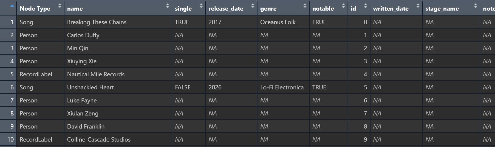

pacman::p_load(igraph, tidygraph, ggraph,
visNetwork, lubridate, clock,
tidyverse, graphlayouts,
concaveman, ggforce, jsonlite, dplyr)Sailor Shift: Rise and Resonance
Getting Start
Installing and loading the required libraries
Importing data
t_data <- fromJSON("data/MC1_graph.json",
simplifyDataFrame = TRUE)1. Introduction
Sailor Shift is one of the most influential figures in the development of “Oceans Folk” music. From her humble beginnings as a singer on Oceanus Island to her current status as a global superstar, she has grown to represent not only her own personal success, but has also propelled this niche genre into the world. This project uses data analysis and visualization to delve deeper into her network of collaborations, musical influences, and her importance in the overall music ecosystem. We will reveal how she has influenced others and been shaped by the zeitgeist, and further reflect on what her rise reveals about the new generation of musicians.
2. Data processing
2.1. Extracting Edges and Nodes
nodes_tbl <- as_tibble(t_data$nodes)
edges_tbl <- as_tibble(t_data$links) 2.2. Get closer to data
2.2.1. Edges

glimpse(edges_tbl)Rows: 37,857
Columns: 4
$ `Edge Type` <chr> "InterpolatesFrom", "RecordedBy", "PerformerOf", "Composer…
$ source <int> 0, 0, 1, 1, 2, 2, 3, 5, 5, 5, 5, 5, 5, 5, 5, 5, 5, 5, 5, 5…
$ target <int> 1841, 4, 0, 16180, 0, 16180, 0, 5088, 14332, 11677, 2479, …
$ key <int> 0, 0, 0, 0, 0, 0, 0, 0, 0, 0, 0, 0, 0, 0, 0, 0, 0, 0, 0, 0…length(unique(edges_tbl$`Edge Type`))[1] 12unique(edges_tbl$`Edge Type`) [1] "InterpolatesFrom" "RecordedBy" "PerformerOf"
[4] "ComposerOf" "ProducerOf" "InStyleOf"
[7] "LyricalReferenceTo" "CoverOf" "DistributedBy"
[10] "MemberOf" "LyricistOf" "DirectlySamples" The edges dataset contains 37,857 records and 4 fields to represent the various relationships between entities in the network. Each edge contains the node IDs (source and target) of the starting and ending points, as well as 12 Edge Types describing the nature of the relationship, such as “PerformerOf”, ‘ComposerOf’ or “RecordedBy”. Meanwhile, the key field is used to distinguish between multiple connections between the same node pair.
2.2.2. Nodes

glimpse(nodes_tbl)Rows: 17,412
Columns: 10
$ `Node Type` <chr> "Song", "Person", "Person", "Person", "RecordLabel", "S…
$ name <chr> "Breaking These Chains", "Carlos Duffy", "Min Qin", "Xi…
$ single <lgl> TRUE, NA, NA, NA, NA, FALSE, NA, NA, NA, NA, TRUE, NA, …
$ release_date <chr> "2017", NA, NA, NA, NA, "2026", NA, NA, NA, NA, "2020",…
$ genre <chr> "Oceanus Folk", NA, NA, NA, NA, "Lo-Fi Electronica", NA…
$ notable <lgl> TRUE, NA, NA, NA, NA, TRUE, NA, NA, NA, NA, TRUE, NA, N…
$ id <int> 0, 1, 2, 3, 4, 5, 6, 7, 8, 9, 10, 11, 12, 13, 14, 15, 1…
$ written_date <chr> NA, NA, NA, NA, NA, NA, NA, NA, NA, NA, "2020", NA, NA,…
$ stage_name <chr> NA, NA, NA, NA, NA, NA, NA, NA, NA, NA, NA, NA, NA, NA,…
$ notoriety_date <chr> NA, NA, NA, NA, NA, NA, NA, NA, NA, NA, NA, NA, NA, NA,…The nodes dataset contains 17,412 entries, each representing an entity within the music network and categorized under the Node Type column as “Person”, “Song”, or “RecordLabel”. Each node includes relevant attributes based on its type—for example, songs have fields such as single, release_date, genre, and notable, while people may have stage_name and notoriety_date. The presence of missing values (NA) in many fields indicates that certain attributes are only applicable to specific node types.
2.2.3. Initial EDA
ggplot(data = edges_tbl,
aes(y = `Edge Type`)) +
geom_bar()
This bar chart above shows the distribution of different edge types in the music relationship network. The most common type is PerformerOf, indicating that the data heavily captures who performed which work. Other frequent types include ComposerOf, LyricistOf, and ProducerOf, highlighting the importance of creative and production roles. In contrast, relationships like MemberOf and DirectlySamples are less common, suggesting these connections are either rarer or less documented.
ggplot(data = nodes_tbl,
aes(y = `Node Type`)) +
geom_bar()
This bar chart displays the distribution of different node types in the music network dataset. The most common type is Person, with a count far exceeding other categories, indicating a strong focus on individual artists, producers, and contributors. Songs also appear in large numbers, highlighting the dataset’s emphasis on works being created or performed. Other types like Albums, RecordLabels, and MusicalGroups are present but in significantly smaller quantities.
3. Creating Knowledge Graph
3.1. Mapping from node id to row index
id_map <- tibble(id = nodes_tbl$id,
index = seq_len(
nrow(nodes_tbl)))3.2. Map source and target IDs to row indices
edges_tbl <- edges_tbl %>%
left_join(id_map, by = c("source" = "id")) %>%
rename(from = index) %>%
left_join(id_map, by = c("target" = "id")) %>%
rename(to = index)3.3. Filter out any unmatched (invalid) edges
edges_tbl <- edges_tbl %>%
filter(!is.na(from), !is.na(to))3.4. Creating tidygraph
graph <- tbl_graph(nodes = nodes_tbl,
edges = edges_tbl,
directed = t_data$directed)class(graph)[1] "tbl_graph" "igraph" 4. Visualising the knowledge graph
set.seed(1234)4.1. Visualising the whole graph
ggraph(graph, layout = "fr") +
geom_edge_link(alpha = 0.3,
colour = "gray") +
geom_node_point(aes(color = `Node Type`),
size = 4) +
geom_node_text(aes(label = name),
repel = TRUE,
size = 2.5) +
theme_void()
4.2. Visualising the sub-graph
4.2.1. Filtering edges to only “MemberOf”
graph_memberof <- graph %>%
activate(edges) %>%
filter(`Edge Type` == "MemberOf")4.2.2. Extracting only connected nodes (i.e., used in these edges)
used_node_indices <- graph_memberof %>%
activate(edges) %>%
as_tibble() %>%
select(from, to) %>%
unlist() %>%
unique()4.2.3. Keeping only those nodes
graph_memberof <- graph_memberof %>%
activate(nodes) %>%
mutate(row_id = row_number()) %>%
filter(row_id %in% used_node_indices) %>%
select(-row_id) # optional cleanup4.2.4. Plotting the sub-graph
ggraph(graph_memberof,
layout = "fr") +
geom_edge_link(alpha = 0.5,
colour = "gray") +
geom_node_point(aes(color = `Node Type`),
size = 1) +
geom_node_text(aes(label = name),
repel = TRUE,
size = 2.5) +
theme_void()5. Sailor Shift’s Career Connections
5.1. The contributors who shaped the modern Sailor Shift
A singer’s journey to fame is never a solitary one. Sailor has been accompanied by many — fellow singers, producers, instrumentalists, composers, and others who helped shape her path.
5.1.1 Who influenced Sailor’s Works?
# Sailor Shift's Index
sailor_idx <- which(nodes_tbl$name == "Sailor Shift")
# Sailor Shift's works'Index
perf_edges <- graph %>%
activate(edges) %>%
as_tibble() %>%
filter(`Edge Type` == "PerformerOf", from == sailor_idx)
sailor_works_idx <- perf_edges %>% pull(to) %>% unique()
focus_idx <- unique(c(sailor_idx, sailor_works_idx))
# Keep Edges that 'influence' Sailor Shift's works
influence_types <- c("ComposerOf", "ProducerOf", "LyricistOf", "CoverOf")
graph_influence <- graph %>%
activate(edges) %>%
filter(
`Edge Type` %in% influence_types,
to %in% focus_idx
)
# Extract Nodes
used_node_indices <- graph_influence %>%
activate(edges) %>%
as_tibble() %>%
select(from, to) %>%
unlist() %>%
unique()
# Keep Nodes
graph_influence <- graph_influence %>%
activate(nodes) %>%
mutate(.row = row_number()) %>%
filter(.row %in% used_node_indices) %>%
select(-.row)
# Plot
ggraph(graph_influence, layout = "fr") +
geom_edge_link(aes(color = `Edge Type`),
arrow = arrow(length = unit(4, "pt"), type = "closed"),
end_cap = circle(3, "pt"),
start_cap = circle(3, "pt"),
width = 0.5,
alpha = 0.6,
show.legend = TRUE) +
geom_node_point(aes(color = `Node Type`),
size = 2) +
geom_node_text(aes(label = name),
size = 2.5,
repel = TRUE,
max.overlaps = Inf) +
scale_edge_colour_brewer(palette = "Set2",
name = "Edge Type") +
scale_color_manual(values = c(
"Person" = "#377EB8",
"Album" = "#E41A1C",
"RecordLabel" = "#4DAF4A"
), name = "Node Type") +
theme_void() +
theme(
legend.position = "right",
legend.title = element_text(size = 10),
legend.text = element_text(size = 8),
plot.margin = margin(5, 5, 5, 5)
)